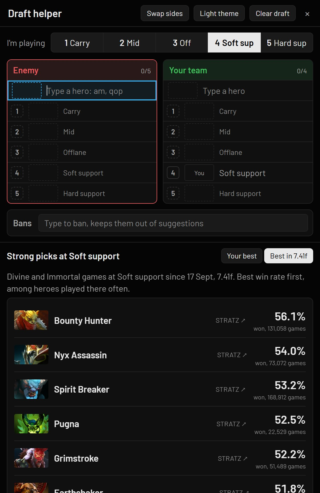
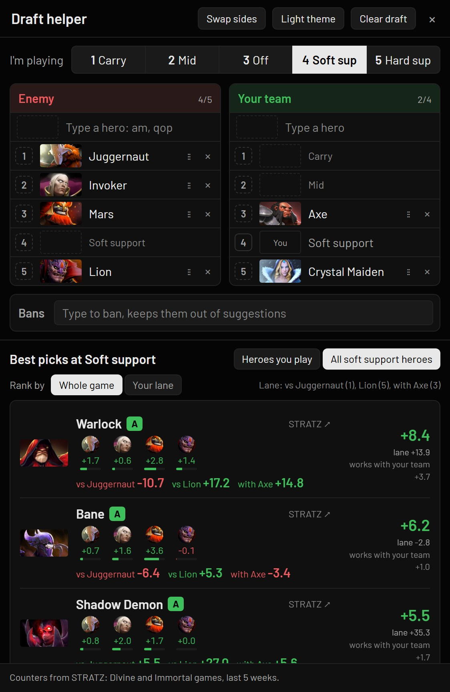
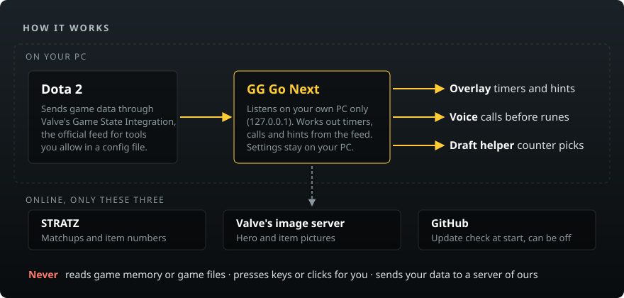
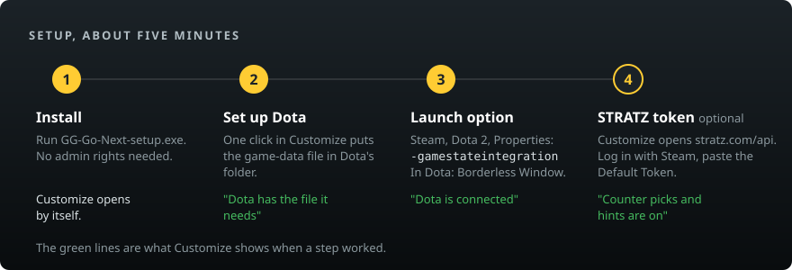

A free helper for Dota 2
It sits on your screen and tells you what's coming, what to buy and what to pick. Timers, voice calls, item and skill hints, and a draft helper.
Download for WindowsFree and open source. No account, no ads. Release notes
A 45-second tour, with sound.
What you get
- Never miss a rune or a stackRunes, shrines, lotus pools, stacks, Roshan, Aegis, Tormentor, the enemy glyph and your wards, with a voice call 20 seconds before.
- Buy and skill betterItems that win more right now, and the next skill most good players take.
- Only what your role needsA carry isn't called for stacks, a support isn't told to farm ancients. Every switch can change per role.
- A bit of funNow and then a spoken joke, like "No TP. Enjoy the walk."
Pick better


Hear the voices
Eight voices, each saying something the app says in a game. Pick yours in Customize, under Voice.
| Voice | Message | Listen |
|---|---|---|
| MichaelUS | "Power rune and bounty in twenty seconds." | |
| FenrirUS | "Roshan could be up now, top pit." | |
| PuckUS | "No TP. Enjoy the walk." | |
| HeartUS | "Stack in five." | |
| BellaUS | "They have an invisible hero. Carry dust or a sentry." | |
| NicoleUS, soft | "Dark map. Bring a flashlight." | |
| GeorgeUK | "Roshan is alive and lonely." | |
| EmmaUK | "Skill point ready." |
Is it safe?
- Valve's own game feedIt only uses Game State Integration, the official feed Dota sends to apps you allow.
- Hands off the gameIt never reads game memory or game files, and never presses keys or clicks for you.
- No account, no server of oursYour settings stay on your PC. Online it only talks to STRATZ, Valve's image server and GitHub.

Setup
- Download and run GG-Go-Next-setup.exe. Customize opens by itself.
- Click Set up Dota.
- In Steam, right-click Dota 2, then Properties, and add
-gamestateintegrationto Launch Options. In Dota's video settings, pick Borderless Window. - For the draft helper and hints, add a free STRATZ token. Customize walks you through it.
In game, Ctrl+Shift+D opens Customize and Ctrl+Shift+S hides the overlay.

FAQ
- Can I get banned?
- It only uses the feed Valve built for tools like this and doesn't touch the game. Nobody outside Valve can promise anything, but it does nothing Valve's anti-cheat looks for.
- Windows says the file might be unsafe.
- The files aren't code-signed yet, so SmartScreen warns about them. Pick "More info", then "Run anyway". Each release lists the file's SHA-256 so you can check it's the real one.
- How do updates work?
- When a new version is out, Customize and the tray show Update now. One click installs it and keeps your settings. Nothing installs without that click.
- Does it cost anything?
- No. If it helps your games, you can tip at ko-fi.com/kalelooz.
- Was AI used to make it?
- Yes. kalelooz plays Dota, designs the features, tests them in real games and decides what goes in. The code is written with Claude Code.
- Something's wrong, or I have an idea.
- Click Report a problem in Customize, or Report a problem or idea in the tray. Or open an issue on GitHub.